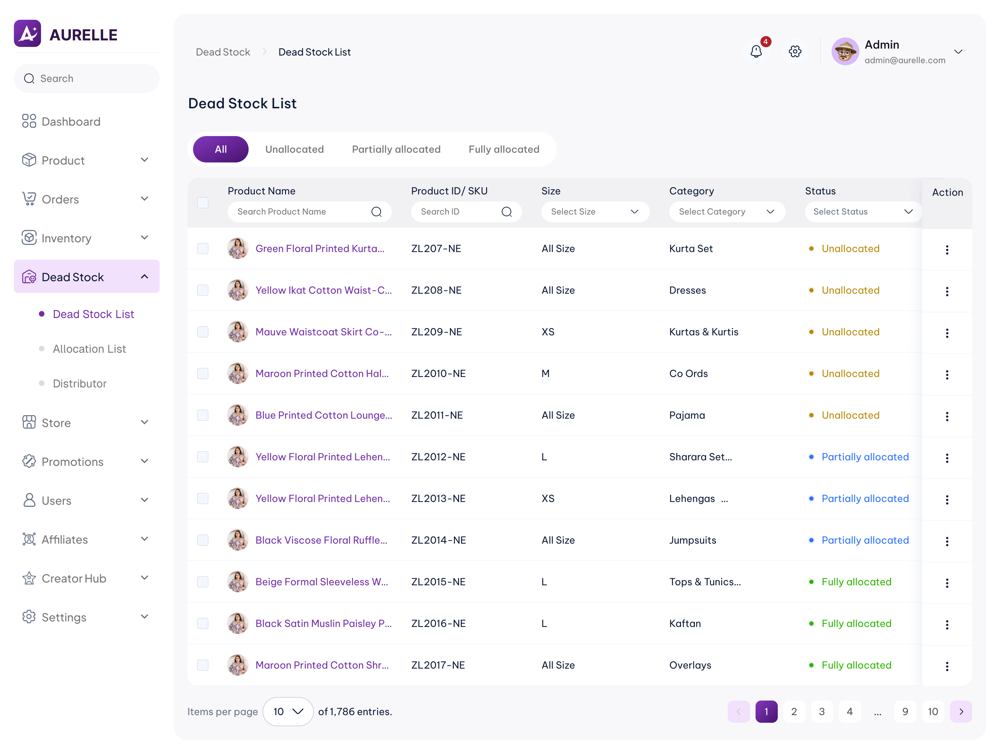
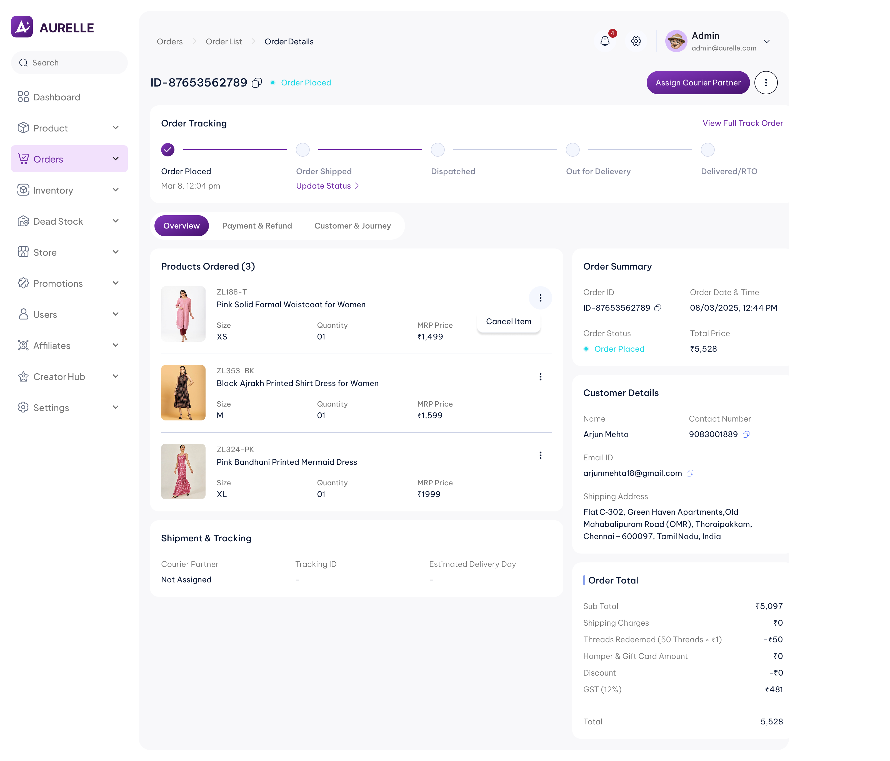
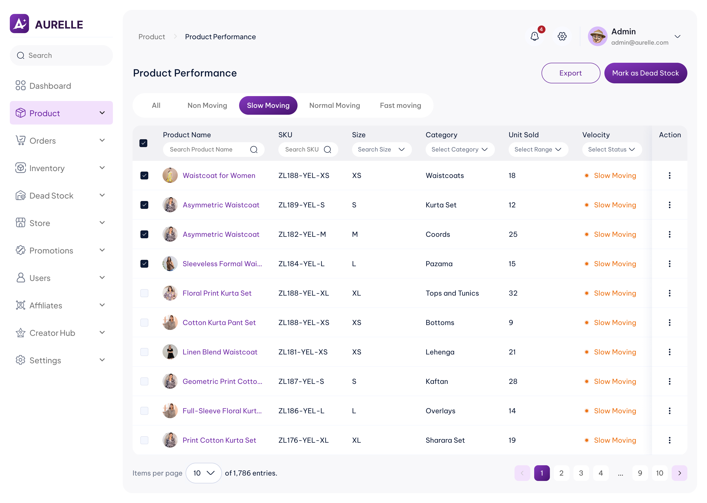
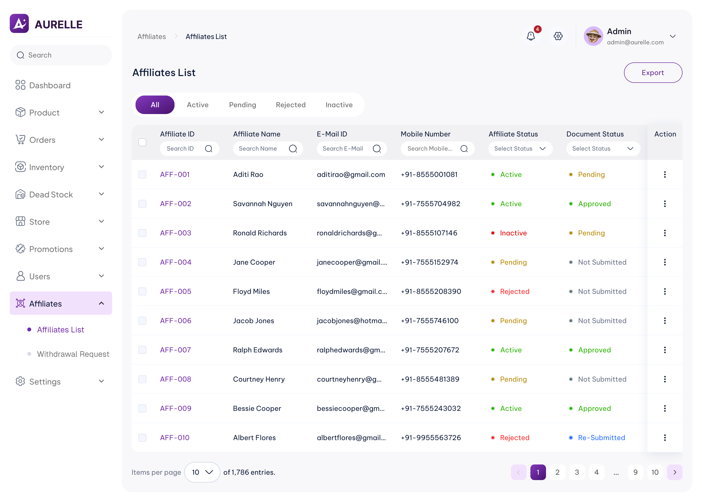
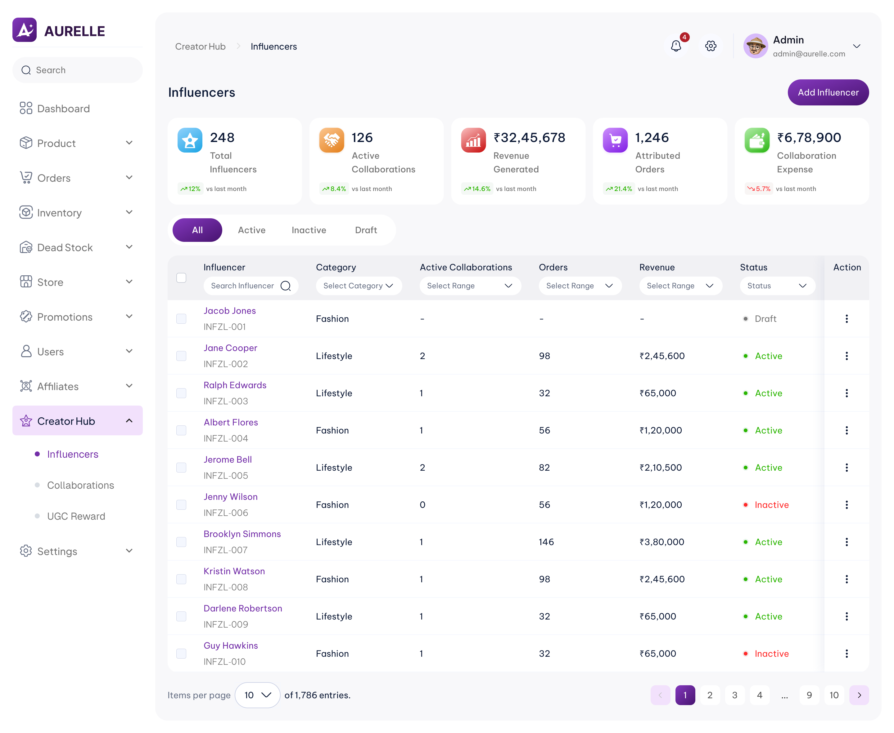

Order operations
Review item-level cancellation, return, exchange and refund exceptions.
CASE STUDY / E-COMMERCE OPERATIONS
Designing clarity into complex commerce operations.
An administration experience for managing orders, returns, refunds, ageing inventory, distributors, affiliates and influencer collaborations.

01 / THE CHALLENGE
A single admin platform connects people with different responsibilities. Decisions need to be clear at the right level: order, product variant, stock allocation, affiliate or collaboration.
Review item-level cancellation, return, exchange and refund exceptions.
Inspect ageing stock, classify velocity and track distributor allocations.
Manage affiliate approvals, commissions and influencer collaborations.
02 / DESIGN APPROACH
The case study is grounded in supplied workflow requirements and UI screenshots. No interview findings or usability metrics are claimed without separate evidence.
Identify actors, order and inventory rules, and status transitions.
Separate record-level actions from variant- and quantity-level decisions.
Organize screens around statuses, exceptions and context-specific actions.
Compare flows against the supplied requirements and actual interface states.
03 / WORKSTREAM
Order-level tracking, item-level decisions and refund records need different kinds of context. These original screens show how each action is placed where an admin needs it.

PROBLEMAdmins need both the order's progress and individual product context.
DESIGN DECISIONKeep the tracking timeline separate from product-level information.
Makes the state of the order easier to scan without opening multiple screens.
Screens above are original dashboard exports, displayed without cropping or visual redesign. No legacy Before screenshots were provided for these flows.
Instead of cancelling an entire multi-product order, the selected item has a dedicated cancellation action and reason.
Replacement delivery has its own fulfilment history. Independent return tracking for each variant in a multi-item request is documented in the requirements, but a matching return screen was not included in this upload.
The refund flows distinguish standard initiation from COD manual recording, with UPI or bank-transfer details and transaction references where applicable.
Order delay is handled as a contextual action with a reason, instead of silently changing the order's state.
04 / WORKSTREAM
Identifying ageing inventory is only the first step. Review, stock classification, distributor allocation and acceptance must remain independently traceable.

PROBLEM
DESIGN DECISION
05 / WORKSTREAM
Affiliate approval, partner information and commission records have different review needs. The screens separate these concerns without losing partner context.

PROBLEM
DESIGN DECISION
06 / WORKSTREAM
Paid, barter and hybrid collaborations have different requirements. The showcased screens focus on structured onboarding, clear validation and performance reporting.

PROBLEM
DESIGN DECISION
07 / OUTCOMES & LEARNINGS
The design direction focuses on clearer operational states and more precise actions. These are expected workflow benefits, not measured business results.
Item-level order decisions and quantity-aware stock allocations.
Status and history grouped around the record an admin is managing.
Explicit review, confirmation and tracking for operational transitions.
05 / CONTACT
Let's connect and create something meaningful.